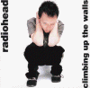

Climbing up the Walls
RAD 056
Tracks 1,8,9,13 recorded for Evening Session, BBC Radio One 28/May/97
Tracks 4,5,15 recorded for BBC2 Later... With Jools Holland 31/May/97
<1> Paranoid Android (Evening Session)
<2> Polyethylene (Parts 1 & 2)
<3> Pearly*
<4> No Surprises (Later...)
<5> Airbag (Later...)
<6> A Reminder
<7> Melatonin
<8> Talk Show Host (Evening Session)
<9> Climbing up the Walls (Evening Session)
<10> Meeting in the Aisle
<11> Lull
<12> Climbing up the Walls (Zero 7 Mix)
<13> Exit Music [For a Film] (Evening Session)
<14> Climbing up the Walls (Fila Brazillia Mix)
<15> Paranoid Android (Later...)
Type of recording : CD, Radio, TV Broadcasts
Quality : ?
Notes :